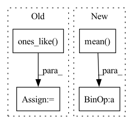

Pattern ID :28331

Before Change
loss = loss_loc * self.box_ratio + loss_conf * self.balance[l] * self.obj_ratio + loss_cls * self.cls_ratio
num_pos = torch.sum(y_true[..., 4])
num_pos = torch.max(num_pos, torch.ones_like(num_pos))
return loss, num_pos
def get_near_points(self, x, y, i, j):
After Change
tobj = torch.where(y_true[..., 4] == 1, giou.detach().clamp(0), torch.zeros_like(y_true[..., 4]))
else:
tobj = torch.zeros_like(y_true[..., 4])
loss_conf = torch.mean(self.BCELoss(conf, tobj))
if n != 0:
print(loss_loc * self.box_ratio, loss_cls * self.cls_ratio, loss_conf * self.balance[l] * self.obj_ratio)
loss += loss_conf * self.balance[l] * self.obj_ratio
return loss
def get_near_points(self, x, y, i, j):
In pattern: SUPERPATTERN
Frequency: 3
Non-data size: 4
Instances
Fragment ID: 83659754
Project Name: bubbliiiing/yolov5-pytorch
Commit Name: 27ae9bd10c96138c60752d1da4fa965c0b7372f3
Time: 2022-01-21
Author: 47347516+bubbliiiing@users.noreply.github.com
File Name: nets/yolo_training.py
M Class Name: YOLOLoss
N Class Name: YOLOLoss
M Method Name: forward(4)
N Method Name: forward(4)
M Parent Class: nn.Module
N Parent Class: nn.Module
M File Name: nets/yolo_training.py
N File Name: nets/yolo_training.py
M Start Line: 156
M End Line: 200
N Start Line: 159
N End Line: 201
'>
Before Change
else:
if random_process is not None:
// deterministic policy
a_dist.scale = (
torch.ones_like(a_dist.scale) * random_process.current_scale
)
a = random_process.sample(
a_dist.mean, clip=noise_clip, update_schedule=False
After Change
else:
vals = agent.adv_estimator(o, a, ensemble_idx=i)
actor_loss += vals - entropy_bonus
actor_loss = -actor_loss.mean() / len(agent.actors)
actor_optimizer.zero_grad(set_to_none=True)
actor_loss.backward()
'>
Fragment ID: 83659748
Project Name: jakegrigsby/super_sac
Commit Name: 98889188870f1191780b108af5ab366ed5fe0622
Time: 2021-10-27
Author: jcg6dn@virginia.edu
File Name: super_sac/learning.py
M Class Name: AnonimousClass
N Class Name: AnonimousClass
M Method Name: online_actor_update(15)
N Method Name: online_actor_update(15)
M Parent Class:
N Parent Class:
M File Name: super_sac/learning.py
N File Name: super_sac/learning.py
M Start Line: 273
M End Line: 325
N Start Line: 273
N End Line: 318
'>
Before Change
def d_vanilla(d_logit_real, d_logit_fake, DDP):
device = d_logit_real.get_device()
ones = torch.ones_like(d_logit_real, device=device, requires_grad=False)
d_loss = -torch.mean(nn.LogSigmoid()(d_logit_real) + nn.LogSigmoid()(ones - d_logit_fake))
return d_loss
After Change
def d_vanilla(d_logit_real, d_logit_fake, DDP):
d_loss = torch.mean(F.softplus(-d_logit_real)) + torch.mean(F.softplus(d_logit_fake))
return d_loss
def g_vanilla(d_logit_fake, DDP):
'>
Fragment ID: 83659750
Project Name: postech-cvlab/pytorch-studiogan
Commit Name: 3f875a9b93a8004867378ce34bf854c6d91c8141
Time: 2022-01-27
Author: first287@naver.com
File Name: src/utils/losses.py
M Class Name: AnonimousClass
N Class Name: AnonimousClass
M Method Name: d_vanilla(3)
N Method Name: d_vanilla(3)
M Parent Class:
N Parent Class:
M File Name: src/utils/losses.py
N File Name: src/utils/losses.py
M Start Line: 354
M End Line: 356
N Start Line: 354
N End Line: 354